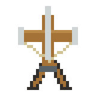
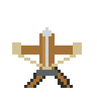
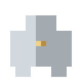
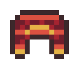
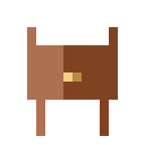

Les crafts d’abord, leur résultat et leur utilité juste dessous, puis les objets, les blocs et le parcours de l’œuf à la monture. Tout se lit sur cette page.
29 + 2 recettes : 29 illustrées, 2 forges nouvelles24 + 5 crafts et améliorations à la forge26.1–26.3 Minecraft Java · Fabric (candidate)
La recherche filtre les fiches des recettes, objets et nouveautés.
Utilité et utilisation : Défense automatique compacte : dégâts de base 8, portée 12 blocs, délai de rechargement 40 ticks. Pose-la sur un support adapté, puis charge-la avec des flèches ou des amorces.
Le chêne illustré est un exemple : tout ingrédient admis par le tag indiqué convient.
Ingrédients : 2 × Ficelle + 1 × Lingot de fer + 3 × Planches acceptées par #minecraft:planks + 1 × Arbalète + 2 × Bâton.
Résultat : 1 × Baliste moyenne.
Utilité et utilisation : Défense automatique : dégâts de base 14, portée 14 blocs, rechargement 80 ticks. Elle tire plus fort, mais moins souvent que la légère.
Le chêne illustré est un exemple : tout ingrédient admis par le tag indiqué convient.
Ingrédients : 2 × Ficelle + 3 × Lingot de fer + 3 × Bûche acceptée par #minecraft:logs + 1 × Arbalète.
Résultat : 1 × Baliste lourde.
Utilité et utilisation : Défense automatique lourde : dégâts de base 22, portée 16 blocs, rechargement 40 ticks. Son emprise est de 2 × 2 blocs ; prévois un support et un espace dégagés.
Le chêne illustré est un exemple : tout ingrédient admis par le tag indiqué convient.
Ingrédients : 1 × Pépite de fer + 1 × Bâton + 1 × Plume.
Résultat : 4 × Amorce de carreau.
Utilité et utilisation : Munition directement acceptée par les balistes, au même titre que les flèches. Interagis avec la baliste en tenant les amorces : chaque objet chargé ajoute un tir, jusqu’à une réserve de 64. La recette produit 4 amorces.
Utilité et utilisation : Piège défensif au contact. Pose-le sur le terrain pour entraver et blesser les créatures concernées. La ligne centrale vide de la recette est obligatoire ; les dalles demandées sont les dalles de pierre.
Ingrédients : 1 × Pieux en bois + 3 × Lingot de fer.
Résultat : 1 × Pieux renforcés en fer.
Utilité et utilisation : Version renforcée du piège en bois. La transformation consomme les pieux en bois et trois lingots de fer ; les quatre ingrédients se placent librement dans la grille.
Utilité et utilisation : Ravitaille une baliste et sélectionne les carreaux d’obsidienne associés à l’effet Fissure. Place la table directement sous l’emprise de la baliste ou contre l’un de ses côtés.
Ingrédients : 1 × Table d’archerie + 2 × Poudre de Blaze + 2 × Brique du Nether.
Résultat : 1 × Table d’archerie infernale.
Utilité et utilisation : Ravitaille une baliste et sélectionne les carreaux infernaux : effets incendiaires et zone de flammes. Place-la sous l’emprise ou contre un côté ; simplement la laisser loin dans la pièce ne suffit pas.
Utilité et utilisation : Ravitaille une baliste avec les tirs des profondeurs, associés au choc acoustique. Le choix du projectile dépend de la table détectée par la baliste, pas d’un craft supplémentaire de carreaux.
Ingrédients : 2 × Planches acceptées par #minecraft:planks + 1 × Carte vierge + 4 × Lingot d’or + 2 × Pierre lisse.
Résultat : 1 × Table de chasse draconique.
Utilité et utilisation : Poste lié au chasseur de dragons : son comportement recherche cette table et s’y rattache. Les échanges se font avec le chasseur, pas dans une interface de fabrication de la table.
Le chêne illustré est un exemple : tout ingrédient admis par le tag indiqué convient.
Utilité et utilisation : Défense automatique compacte : dégâts de base 8, portée 12 blocs, délai de rechargement 40 ticks. Pose-la sur un support adapté, puis charge-la avec des flèches ou des amorces.
Ingrédients : 1 × Baliste moyenne endommagée + 2 × Lingot de fer + 1 × Bûche acceptée par #minecraft:logs.
Résultat : 1 × Baliste moyenne.
Utilité et utilisation : Défense automatique : dégâts de base 14, portée 14 blocs, rechargement 80 ticks. Elle tire plus fort, mais moins souvent que la légère.
Le chêne illustré est un exemple : tout ingrédient admis par le tag indiqué convient.
Ingrédients : 1 × Baliste lourde endommagée + 3 × Lingot de fer + 1 × Arbalète.
Résultat : 1 × Baliste lourde.
Utilité et utilisation : Défense automatique lourde : dégâts de base 22, portée 16 blocs, rechargement 40 ticks. Son emprise est de 2 × 2 blocs ; prévois un support et un espace dégagés.
Ingrédients : 3 × Cuir + 2 × Lingot de fer + 2 × Écaille de dragon.
Résultat : 1 × Selle draconique.
Utilité et utilisation : Selle spécifique nécessaire pour monter ton dragon adulte. Équipe-la par interaction ; la selle vanilla ne remplace pas cet objet. Monte ensuite avec la main vide, sans être accroupi.
Utilité et utilisation : Remplace la selle simple par une selle avec deux compartiments de 54 emplacements, soit 108 emplacements. Elle reste une selle pour la monte d’un dragon adulte possédé.
Utilité et utilisation : Objet de commandement : sélectionner son dragon et lui donner des ordres. Il ne sert pas à apprivoiser un dragon sauvage ; le lien de propriété est établi à l’éclosion.
Ingrédients : 1 × Armure de dragon en diamant + 1 × Lingot de netherite + 1 × Écaille de dragon.
Résultat : 1 × Armure de dragon en netherite.
Utilité et utilisation : Équipement du dragon adulte possédé. Donne 18 points d’armure. Dans ce JAR, son amélioration se fait par craft sans forme, sans modèle de forge.
Utilité et utilisation : Pièce à fabriquer puis à appliquer à un casque compatible dans la table de forge. Elle ne se porte pas seule. Le casque conserve son identité et reçoit le renfort.
Utilité et utilisation : Pièce à appliquer à un plastron compatible dans la table de forge. L’application est distincte de la fabrication du renfort et refuse une pièce déjà renforcée.
Utilité et utilisation : Pièce à appliquer aux jambières compatibles dans la table de forge. Elle participe à l’ensemble complet de quatre pièces renforcées.
Utilité et utilisation : Pièce à appliquer à des bottes compatibles dans la table de forge. Les protections liées au feu et à la nage dans la lave exigent l’ensemble complet des quatre pièces renforcées.
Ingrédients : 1 × Casque en diamant + 1 × Renfort de casque en écailles.
Résultat : 1 × Casque en diamant amélioré.
Utilité et utilisation : Exemple illustré avec une pièce en diamant ; les autres bases acceptées par le tag correspondant fonctionnent aussi. Laisser l’emplacement du modèle de forge vide. Appliquer le renfort correspondant à la bonne pièce ; une pièce déjà renforcée est refusée. Le résultat conserve la même apparence de base. Les effets de l’ensemble exigent les quatre pièces renforcées.
Ingrédients : 1 × Plastron en diamant + 1 × Renfort de plastron en écailles.
Résultat : 1 × Plastron en diamant amélioré.
Utilité et utilisation : Exemple illustré avec une pièce en diamant ; les autres bases acceptées par le tag correspondant fonctionnent aussi. Laisser l’emplacement du modèle de forge vide. Appliquer le renfort correspondant à la bonne pièce ; une pièce déjà renforcée est refusée. Le résultat conserve la même apparence de base. Les effets de l’ensemble exigent les quatre pièces renforcées.
Ingrédients : 1 × Jambières en diamant + 1 × Renfort de jambières en écailles.
Résultat : 1 × Jambières en diamant amélioré.
Utilité et utilisation : Exemple illustré avec une pièce en diamant ; les autres bases acceptées par le tag correspondant fonctionnent aussi. Laisser l’emplacement du modèle de forge vide. Appliquer le renfort correspondant à la bonne pièce ; une pièce déjà renforcée est refusée. Le résultat conserve la même apparence de base. Les effets de l’ensemble exigent les quatre pièces renforcées.
Ingrédients : 1 × Bottes en diamant + 1 × Renfort de bottes en écailles.
Résultat : 1 × Bottes en diamant amélioré.
Utilité et utilisation : Exemple illustré avec une pièce en diamant ; les autres bases acceptées par le tag correspondant fonctionnent aussi. Laisser l’emplacement du modèle de forge vide. Appliquer le renfort correspondant à la bonne pièce ; une pièce déjà renforcée est refusée. Le résultat conserve la même apparence de base. Les effets de l’ensemble exigent les quatre pièces renforcées.
Ingrédients : 1 × Épée en diamant + 1 × Cœur de dragon.
Résultat : 1 × Épée en diamant amélioré.
Utilité et utilisation : Exemple avec une épée en diamant : modèle vide + équipement compatible + cœur → même équipement amélioré. Le cœur accepte notamment les outils de minage, épées, lances, masse, arc, arbalète et bouclier, ainsi que les livres enchantés selon les conditions du code. Une nouvelle application sur un équipement déjà infusé, ou sur un livre, exige au moins un enchantement encore améliorable. Une armure ordinaire ne fait pas partie du tag heart_equipment fourni.
RECONNAÎTRE ET UTILISER
Objets et équipement

Baliste moyenne
Défense automatique : dégâts de base 14, portée 14 blocs, rechargement 80 ticks. Elle tire plus fort, mais moins souvent que la légère.
Autre objet de commandement qui permet de sélectionner un dragon déjà possédé. Aucune recette dans ce JAR : le chasseur de dragons en propose un contre 8 émeraudes, avant variations éventuelles du prix.
Pas de recette de fabrication déclarée dans ce JAR.
ballista:draconic_whistle
Œuf d’apparition de dragon bleu
Objet d’apparition directe du dragon bleu, à distinguer de l’œuf posé qui incube. Aucune recette de survie déclarée. Il ne remplace pas le parcours œuf → apprivoisement → croissance.
Pas de recette de fabrication déclarée dans ce JAR.
ballista:blue_dragon_spawn_egg
Écaille de dragon
Ressource des dragons utilisée pour les selles, armures, bâton et renforts. Les tables de butin des dragons en contiennent. Le chasseur propose aussi 2 écailles contre 10 émeraudes comme prix de base.
Pas de recette de fabrication déclarée dans ce JAR.
ballista:dragon_scale

Baliste légère
Défense automatique compacte : dégâts de base 8, portée 12 blocs, délai de rechargement 40 ticks. Pose-la sur un support adapté, puis charge-la avec des flèches ou des amorces.
Remplace la selle simple par une selle avec deux compartiments de 54 emplacements, soit 108 emplacements. Elle reste une selle pour la monte d’un dragon adulte possédé.
Objet de commandement : sélectionner son dragon et lui donner des ordres. Il ne sert pas à apprivoiser un dragon sauvage ; le lien de propriété est établi à l’éclosion.
Objet d’apparition directe du dragon vert, à distinguer de l’œuf posé qui incube. Aucune recette de survie déclarée. Il ne remplace pas le parcours œuf → apprivoisement → croissance.
Pas de recette de fabrication déclarée dans ce JAR.
ballista:green_dragon_spawn_egg

Armure de dragon en fer
Équipement du dragon adulte possédé. Donne 8 points d’armure de base. Ce n’est pas une armure à porter par le joueur.
Pièce à appliquer à des bottes compatibles dans la table de forge. Les protections liées au feu et à la nage dans la lave exigent l’ensemble complet des quatre pièces renforcées.
Objet d’apparition directe du dragon rouge, à distinguer de l’œuf posé qui incube. Aucune recette de survie déclarée. Il ne remplace pas le parcours œuf → apprivoisement → croissance.
Pas de recette de fabrication déclarée dans ce JAR.
ballista:red_dragon_spawn_egg

Renfort de casque en écailles
Pièce à fabriquer puis à appliquer à un casque compatible dans la table de forge. Elle ne se porte pas seule. Le casque conserve son identité et reçoit le renfort.
Pièce à appliquer à un plastron compatible dans la table de forge. L’application est distincte de la fabrication du renfort et refuse une pièce déjà renforcée.
Défense automatique lourde : dégâts de base 22, portée 16 blocs, rechargement 40 ticks. Son emprise est de 2 × 2 blocs ; prévois un support et un espace dégagés.
Ressource servant à améliorer un équipement compatible à la table de forge, en laissant le modèle vide. Le fichier dragon_heart.json consomme un cœur : il ne fabrique pas de cœur. Le chasseur propose également un cœur contre 32 émeraudes comme prix de base.
Pas de recette de fabrication déclarée dans ce JAR.
ballista:dragon_heart

Selle draconique
Selle spécifique nécessaire pour monter ton dragon adulte. Équipe-la par interaction ; la selle vanilla ne remplace pas cet objet. Monte ensuite avec la main vide, sans être accroupi.
Munition directement acceptée par les balistes, au même titre que les flèches. Interagis avec la baliste en tenant les amorces : chaque objet chargé ajoute un tir, jusqu’à une réserve de 64. La recette produit 4 amorces.
Poste lié au chasseur de dragons : son comportement recherche cette table et s’y rattache. Les échanges se font avec le chasseur, pas dans une interface de fabrication de la table.
Ravitaille une baliste et sélectionne les carreaux d’obsidienne associés à l’effet Fissure. Place la table directement sous l’emprise de la baliste ou contre l’un de ses côtés.
Ravitaille une baliste et sélectionne les carreaux infernaux : effets incendiaires et zone de flammes. Place-la sous l’emprise ou contre un côté ; simplement la laisser loin dans la pièce ne suffit pas.
Ravitaille une baliste avec les tirs des profondeurs, associés au choc acoustique. Le choix du projectile dépend de la table détectée par la baliste, pas d’un craft supplémentaire de carreaux.
Piège défensif au contact. Pose-le sur le terrain pour entraver et blesser les créatures concernées. La ligne centrale vide de la recette est obligatoire ; les dalles demandées sont les dalles de pierre.
Version renforcée du piège en bois. La transformation consomme les pieux en bois et trois lingots de fer ; les quatre ingrédients se placent librement dans la grille.
Œuf rouge à récupérer dans le monde, notamment via les antres, puis à poser et incuber. Magma ou lave à 3 blocs au plus ; environ 40 minutes d’incubation. Aucun craft. Reste près de lui pour devenir propriétaire à la naissance.
Pas de recette de fabrication déclarée dans ce JAR.
ballista:red_dragon_egg
Œuf de dragon vert
Œuf vert à récupérer dans le monde, notamment via les antres, puis à poser et incuber. Magma ou lave à 3 blocs au plus ; environ 40 minutes d’incubation. Aucun craft. Reste près de lui pour devenir propriétaire à la naissance.
Pas de recette de fabrication déclarée dans ce JAR.
ballista:green_dragon_egg
Œuf de dragon bleu
Œuf bleu à récupérer dans le monde, notamment via les antres, puis à poser et incuber. Magma ou lave à 3 blocs au plus ; environ 40 minutes d’incubation. Aucun craft. Reste près de lui pour devenir propriétaire à la naissance.
Pas de recette de fabrication déclarée dans ce JAR.
ballista:blue_dragon_egg
Baliste légère endommagée
Épave récupérable liée à la génération du monde. Elle ne tire pas telle quelle : sa réparation restitue une baliste légère à poser.
Pas de recette de fabrication déclarée dans ce JAR.
ballista:light_ballista_wreck
Baliste moyenne endommagée
Épave à récupérer puis à réparer avec deux lingots de fer et une bûche acceptée. Le résultat est une baliste moyenne utilisable.
Pas de recette de fabrication déclarée dans ce JAR.
ballista:medium_ballista_wreck
Baliste lourde endommagée
Épave lourde à réparer avec trois lingots de fer et une arbalète. Le craft restitue l’objet baliste lourde, pas un nouveau bloc décoratif.
Pas de recette de fabrication déclarée dans ce JAR.
ballista:heavy_ballista_wreck
VERSION 0.27.10-CANDIDATE · MINECRAFT 26.1 À 26.3
Nouveautés : le dragon noir, les cœurs, les tanières et les raids
Ce contenu provient du JAR 0.27.10-candidate. Les 29 recettes illustrées précédentes sont conservées ; la nouvelle version comporte 31 recettes JSON, dont deux améliorations spéciales à la forge. Les images ci-dessous sont les textures originales de cette version, et non des images inventées.
Dragon noir corrompu
Quatrième dragon avec œuf d'incubation et œuf d'apparition distincts, comportements de faction corrompue et cœur noir.
En raid draconique III à V, un chasseur de dragons illageois est réellement monté sur le premier dragon noir adulte. Le mod utilise une selle et le mécanisme startRiding. Consultez le guide du dragon noir et le guide des fioles I–V pour ses attaques, l'équipement du cavalier, les récompenses et la composition exacte des renforts.
La version 0.27.10 enregistre les dragons ballista:red_dragon, ballista:green_dragon, ballista:blue_dragon et ballista:black_dragon. Le dragon bleu laisse un cœur gelé, le noir un cœur noir, et les rouges/verts le cœur classique lorsqu'un cœur est généré. Un dragon nouveau-né ne suit pas le même butin qu'un adulte.
Attention : les trois images d'œuf représentent les textures des stades du bloc, pas trois objets différents. Les règles d'hostilité du dragon noir corrompu sont particulières ; ne pas supposer qu'un dragon noir sauvage est automatiquement une monture apprivoisée.
NOUVELLES RECETTES À LA FORGE
Cœurs noir et gelé : composants, paliers et effets
Cœur de dragon gelé
Emplacement de modèle vide+Base : #minecraft:enchantable/armor+
Le code exige une armure admissible. Premier palier : 4 niveaux ; second : 12 niveaux, uniquement après application précédente et passage diamant → netherite conservant le marqueur de progression. Les pièces non admissibles ne produisent pas de résultat.
Type de recette : ballista:frozen_dragon_heart. La forge ne demande aucun modèle de forge dans ce système personnalisé.
Cœur de dragon noir
Emplacement de modèle vide+Base : #ballista:black_heart_equipment+
Compatible avec 18 objets : épée, hache, pioche, pelle, houe et 4 pièces d'armure, chacun en diamant ou netherite. Progression en stades I et II ; pour le stade II, la netherite doit conserver la trace du stade I réalisé sur diamant.
Type de recette : ballista:black_dragon_heart. Le résultat reprend l'objet de base avec ses nouvelles propriétés.
Comment profiter du cœur noir ?
Équipement
Effet lu dans le code
Limite
Armure
Réduction supplémentaire de dégâts : 5 % par stade équipé comptabilisé
Somme plafonnée à 8 stades, soit au plus 40 % dans cette fonction
Armes
Vol de vie jusqu'à 10 % (stade I) ou 20 % (stade II) des dégâts effectivement subis par la cible
Calcul conditionné à un coup valable et aux PV effectivement perdus
Pioche
Fonction de fonte automatique des butins admissibles
Maintenir la pioche en main, s'accroupir et utiliser pour activer/désactiver la fonte
La fonte tient compte du type de bloc et des protections contre les doubles récompenses. Les autres outils peuvent recevoir le cœur noir, mais cela ne signifie pas qu'ils déclenchent tous la fonte automatique d'une pioche.
FAMILLES DE DRAGONS
Ponte, parenté et croissance
48 000 ticksIncubation de l'œuf (40 min si 20 ticks/s)
36 000 ticksIntervalle de ponte du dragon adulte sauvage (30 min)
144 000 ticksIntervalle de ponte du dragon adulte apprivoisé (2 h)
L'incubation, les deux phases de croissance et la ponte d'un dragon adulte sont trois mécanismes distincts. Le jeune dragon demande toujours nourriture et espace pour grandir ; l'adulte ne pond que si les conditions de la zone, de ses ordres et de la remise de l'œuf sont remplies. Les compteurs avancent pendant la simulation du monde chargé.
Les nouvelles interfaces donnent des informations sur le propriétaire, le parent, l'ordre, la tanière et le délai avant la prochaine ponte. Une information séparée affiche la chaleur et la progression de l'œuf.
Sources compilées : DragonLifeRules, EggCycle, EggRules, FamilyRules et DragonInformation.
EXPLORATION ET CONSTRUCTION
Antres, tanières et grandes cavernes
Le monde utilise des structures dédiées aux antres de montagne rouges, verts et bleus, aux grandes cavernes de dragon et aux tanières de pillards. L'apparition dépend des biomes, du terrain, des chunks générés et des règles de placement.
Structure
Espacement / séparation de la grille
À savoir
Antres de montagne
28 / 8
Trois couleurs et variantes de relief
Grande caverne
40 / 12
Butin de gemmes et reliques
Tanière de pillards
28 / 8
Camps, coffres et ennemis illageois
Un dragon domestiqué peut recevoir les ordres « Aménager une tanière » et « Retourner à la tanière ». L'aperçu ajuste la rotation au clic et la hauteur à la molette, puis valide ou annule le projet. La construction peut être refusée si le terrain est inadapté ou si des installations doivent être protégées.
L'espacement indiqué est une valeur de génération Minecraft, pas une promesse de trouver la structure à cette distance exacte. Explorer des chunks inédits est généralement nécessaire.
ENNEMIS ET CAMPAGNES
Chasseurs illageois et camps de pillards
Une nouvelle entité ballista:illager_dragon_hunter accompagne les mécanismes d'hostilité, d'alarme et de protection des camps. Ce chasseur illageois est distinct du marchand villageois chasseur de dragons documenté dans la partie historique. Les coffres de tanières de pillards ont leurs propres tables de butin : aucun objet précis n'est garanti à chaque coffre.
5 FIOLES · 5 NIVEAUX DE COMBAT
Mauvais présage draconique : les effets des fioles I à V
Chaque fiole se boit pendant 32 ticks (1,6 s à 20 TPS). Elle remplace l'ancien effet Mauvais présage par le niveau I, II, III, IV ou V correspondant pour 120 000 ticks (100 minutes) ; une bouteille vide est rendue. Ces fioles n'ajoutent pas cinq effets élémentaires : elles règlent le niveau de Mauvais présage et, lors d'un raid de village, la composition du renfort draconique.
Fiole IFiole IIFiole IIIFiole IVFiole V
Les dragons noirs arrivent à la dernière vague du raid, pas à chaque vague. Le système tente leur apparition dans des zones chargées et libres. Il peut attendre si aucun emplacement convenable n'est trouvé.
Fiole
Renfort draconique final prévu
Chasseur de dragons illageois
Récompense
I
1 dragon noir adolescent (60 PV)
Aucun cavalier
Héros légendaire I
II
1 dragon noir adolescent (60 PV)
Aucun cavalier
Héros légendaire II
III
1 dragon noir adulte (120 PV)
1 chasseur monté sur le dragon
Héros légendaire III
IV
3 dragons noirs adultes
1 chasseur monté sur le premier
Héros légendaire IV
V
3 dragons noirs adultes
1 chasseur monté sur le premier
Héros légendaire V
Le dragon noir et son chasseur illageois monté
À partir du niveau III, le mod crée un dragon noir adulte, l'équipe d'une selle draconique, invoque un chasseur de dragons illageois (`ballista:illager_dragon_hunter`) et appelle startRiding pour le placer sur le dragon. Le chasseur possède 60 PV, une armure complète en diamant, un bâton draconique, et tire des boules de feu sur une cible visible entre environ 3 et 24 blocs, toutes les 3 secondes lorsque l'attaque aboutit. Sa cible est synchronisée avec celle du dragon pendant le raid.
Le raid doit être gagné et tous les dragons du renfort doivent être vaincus. Les joueurs participants reçoivent la progression Héros légendaire I à V selon le meilleur niveau atteint, ainsi qu'un Héros du village du rang correspondant, conservé dans la sauvegarde du mod et réappliqué avec une durée infinie. Les niveaux I–V de fiole diffèrent donc aussi par le rang de récompense.
Sources : DraconicOmenItem, DraconicRaids, DraconicRaidState, IllagerDragonHunter, HunterRules. Le tableau décrit la génération programmée, pas une garantie d'emplacement sans obstacle.
Installation et état des vérifications
Mod Java Fabric pour Minecraft 26.1, 26.1.1, 26.1.2, 26.2 et 26.3 : installer le JAR universel extérieur, Java 25 ou plus, Fabric Loader 0.19.3 minimum et Fabric API. Il ne s'agit ni d'un addon Bedrock, ni d'une version Forge/NeoForge.
Vérifiés hors jeu : manifestes Fabric, contenu des ressources, 31 recettes, 25 tables de butin et méthodes compilées sélectionnées des cinq versions. Non vérifiés dans Minecraft : stabilité client/serveur sur toutes ces versions, gameplay complet en multijoueur, interactions avec d'autres mods, taux réels de génération, raids en partie et validation des nouvelles améliorations à la forge.
Une baliste est une entité posée depuis son objet. Dégage son emplacement, puis interagis avec des flèches ou des amorces : la réserve atteint au maximum 64 tirs. L’amorce n’est pas un composant inutilisable seul : le code la charge directement.
Une table d’archerie détectée sous l’emprise ou contre un côté assure le ravitaillement. Les tables spécialisées sélectionnent les tirs obsidienne, infernaux ou des profondeurs. Sans table reconnue, la baliste utilise sa réserve de munitions. Les échanges avec une baliste déjà possédée sont réservés à son propriétaire, hors exceptions créatives du code.
Pour récupérer sa baliste, son propriétaire utilise l’interaction accroupi, main vide. Le code restitue l’objet et la réserve sous forme de flèches. Une épave doit d’abord être réparée avec sa recette propre.
Baliste
Dégâts de base
Portée
Rechargement
Légère
8
12 blocs
40 ticks
Moyenne
14
14 blocs
80 ticks
Lourde
22
16 blocs
40 ticks
Valeurs de BallistaVariant, avant les effets des tirs et les conditions du combat. 40 ticks correspondent à 2 secondes si le serveur tient 20 ticks/s. La baliste moyenne n’est donc pas la plus rapide.
Le chasseur de dragons
Ce marchand utilise la table de chasse draconique. Ses offres de base comprennent : 2 écailles contre 5 émeraudes, 1 cœur contre 24 émeraudes ; dans l’autre sens, 10 émeraudes pour 2 écailles, 32 pour un cœur, 8 pour un sifflet et 2 pour 8 amorces. Ces prix de base ne garantissent pas un stock illimité ni l’absence de variations.
La carte d’antre est une carte personnalisée liée à un antre connu de l’index du monde, pas une recette supplémentaire. Les œufs d’apparition ne sont pas les œufs d’incubation obtenus dans les antres.
DE L’ŒUF À LA MONTURE
Élever son dragon, étape par étape
À prévoir : 40 min + 40 min + 40 min. L'œuf demande environ 40 minutes d'incubation. Le bébé demande ensuite 40 minutes de croissance nourrie pour devenir adolescent, puis 40 minutes supplémentaires pour devenir adulte. Les durées supposent 20 ticks/s et une simulation active.
1. Obtenir un œuf à incuber
Le mod possède un œuf rouge, un œuf vert et un œuf bleu. Chacun donne un dragon de sa couleur. La génération d'antres peut placer ces œufs dans le monde : récupère un œuf posé et transporte-le vers ton lieu d'élevage.
La table de butin du bloc rend l'œuf correspondant sans condition Toucher de soie. Aucune des 29 recettes du JAR ne fabrique un œuf à incuber. Les œufs d'apparition *_dragon_spawn_egg et l'œuf vanilla de l'Ender Dragon ne sont pas ces œufs d'élevage.
Avant de le déplacer : casser et reposer l'œuf ne conserve pas le temps d'incubation. La progression est sauvegardée dans le bloc posé, pas copiée dans l'objet récupéré.
2. Préparer l'éclosion
Place au moins un bloc de magma ou un bloc de lave à 3 blocs au maximum de l'œuf. Le test utilise la distance réelle dans les trois dimensions : une grande diagonale peut être trop éloignée.
Les trois couleurs utilisent la même chaleur, même le dragon bleu. Dans cette version, torches, feux de camp, lanternes, fours, soleil et biome chaud ne remplacent pas le magma ou la lave. L'eau et la glace n'ont pas de règle spéciale pour l'œuf bleu.
Une installation simple
Espace libre au-dessus et autour
[ ŒUF ]
[ SOL ] bloc plein
[MAGMA] source enterrée
Cette disposition proposée place le magma à deux blocs de l'œuf, hors du passage. Ce n'est pas une recette ni une structure spéciale à activer. Le code teste la distance de la chaleur, sans exiger une vue directe sur le magma.
Garde la zone simulée et l'apparition des créatures autorisée. Le bébé doit aussi pouvoir apparaître sans collision au centre du bloc, 1,1 bloc au-dessus de sa base. Ne construis pas de plafond juste au-dessus de lui.
Exemple avec l'œuf rouge. Vignettes issues du modèle et des textures réels, rendues hors jeu. Les œufs verts et bleus suivent la même chronologie.
État
Temps accumulé
Ce qui se passe
Coquille initiale
0 à moins de 13 min 20 s
Stade 0.
Première fissure
À partir de 13 min 20 s
Stade 1.
Seconde fissure
À partir de 26 min 40 s
Stade 2, mais l'incubation continue.
Naissance
Environ 40 min
48 000 ticks, chaleur, apparition autorisée et espace libre.
Sans chaleur, le compteur s'arrête mais n'est pas effacé. Sauvegarder puis recharger le monde conserve la progression de l'œuf posé. Dormir pour avancer l'heure ne remplace pas les ticks requis. À compteur plein, une obstruction peut encore retarder la naissance.
3. Devenir son propriétaire
L'apprivoisement se joue à la naissance. Donner de la viande à un adulte sauvage n'est pas la méthode d'apprivoisement de ce JAR.
À l'éclosion, le mod cherche d'abord un adulte sauvage et vivant dans un rayon de 16 blocs autour du centre de l'œuf. S'il en trouve, le bébé se rattache au plus proche comme parent. Cette recherche passe avant celle du joueur.
Sans cet adulte sauvage à proximité, le mod choisit le joueur vivant, non spectateur, le plus proche à moins de 8 blocs du point d'apparition du bébé. Ce joueur devient propriétaire. Le joueur qui a posé l'œuf n'est pas enregistré comme propriétaire prioritaire.
Pour réussir
Installe l'œuf à l'écart des dragons adultes sauvages. Reste à quelques blocs pendant la fin de l'incubation, sans bloquer l'espace de naissance. En multijoueur, assure-toi d'être le joueur éligible le plus proche. Il n'y a pas de pourcentage de chance d'apprivoisement dans cette attribution.
Éclosion sans joueur présent : le lien ne se fait pas. Le nourrissage exige déjà un dragon domestiqué ; nourrir un jeune sauvage après coup ne constitue pas une procédure de rattrapage dans le code examiné.
4. Choisir sa nourriture
Tiens un aliment accepté et interagis avec ton dragon domestiqué. Les dix aliments du tag #ballista:dragon_meat fourni sont :
Famille
Cru
Cuit
Bœuf
Bœuf cru
Steak
Porc
Côtelette de porc crue
Côtelette de porc cuite
Poulet
Poulet cru
Poulet cuit
Mouton
Mouton cru
Mouton cuit
Lapin
Lapin cru
Lapin cuit
Les versions crues et cuites donnent le même apport. Poisson, chair putréfiée, os, blé, pain et pommes ne figurent pas dans la liste fournie. Les objets du tag dragon_valuables relèvent d'une autre mécanique et ne sont pas cette nourriture de croissance.
+5 minde réserve de croissance par morceau accepté, soit 6 000 ticks.40 min max.de réserve stockée, soit 48 000 ticks.Jusqu'à 3 cœurssoignés par repas, soit 6 PV sans dépasser le maximum.
Le repas accepté consomme un objet en survie et produit un son ainsi que des particules de cœur. Ces cœurs indiquent aussi un repas : ils ne prouvent pas que le dragon est en mode reproduction.
Nourris-le par interaction directe. Un coffre rempli ou de la viande jetée au sol n'est pas la méthode qui crédite la réserve alimentaire dans ce JAR.
5. Accompagner les deux étapes de croissance
Passage
Temps nourri
Morceaux théoriques
Bébé → adolescent
40 min
8 depuis une réserve vide.
Adolescent → adulte
40 min supplémentaires
8 supplémentaires.
Total bébé → adulte
80 min
16 minimum, hors gaspillage et soins supplémentaires.
Une réserve pleine couvre une étape, pas toute la croissance. Réapprovisionne donc le dragon après son passage à l'adolescence. Le compteur repart de zéro pour la deuxième étape.
La nourriture n'accélère pas le temps. Chaque tick de croissance consomme un tick de réserve. À réserve vide, un jeune domestiqué cesse de grandir et reprend lorsqu'il est nourri. Cette règle ne lui retire pas de santé uniquement parce qu'il a faim. Les jeunes sauvages n'ont pas cette condition de réserve du propriétaire.
Laisser assez de place
Le changement de stade contrôle un volume libre autour du dragon : environ 1,8 × 1,8 × 1,8 bloc pour passer adolescent et 3 × 3 × 3 blocs pour devenir adulte. Ce volume est centré horizontalement sur lui et part de ses pieds. Si le passage est bloqué, le changement de stade attend même lorsque le compteur est plein.
Construis un enclos nettement plus spacieux : ces volumes servent au contrôle de collision, pas à garantir que les ailes et la silhouette entière tiennent dans une petite pièce.
Santé et repas refusés
La santé maximale de base est de 24 PV pour le bébé, 60 PV pour l'adolescent et 120 PV pour l'adulte. Un jeune en pleine santé refuse un repas si sa réserve dépasse 42 000 ticks. Blessé, il peut encore accepter la viande pour les soins, avec une réserve toujours plafonnée. Un adulte en pleine santé n'a plus besoin de repas de croissance.
6. Équiper et monter l'adulte
Attends l'âge adulte et utilise une selle draconique ou une selle draconique de transport, pas une selle vanilla. L'interaction avec l'objet en main remplit un emplacement d'équipement encore vide. Le dragon doit t'appartenir.
Une fois sellé, interagis avec la main vide pour monter, sans rester accroupi. L'interaction accroupie sur un adulte possédé ouvre son équipement lorsque les conditions sont réunies ; elle peut donc passer avant ton intention de le nourrir directement.
Les armures donnent une protection de base de 8 en fer, 10 en or, 14 en diamant et 18 en netherite. La selle de transport comporte deux compartiments de 54 emplacements, soit 108 emplacements. Consulter les recettes des selles, armures et du bâton.
Les ordres comprennent Suivre, Assis / Garde, Patrouille et Promenade. Le bâton draconique sert au commandement du dragon possédé. Consulte les réglages de touches du jeu pour l'inventaire et les commandes : ils peuvent être personnalisés.
7. Résoudre les blocages
Mon œuf ne se fissure pas.
Vérifie le magma ou la lave à 3 blocs au plus, la simulation de la zone et l'autorisation d'apparition des créatures. Une torche ou un biome chaud ne suffit pas.
Il est fissuré, mais le bébé ne naît pas.
Le stade 2 commence dès 26 min 40 s. Attends les 40 minutes complètes et libère l'espace de naissance au-dessus de l'œuf.
Le bébé suit un dragon sauvage ou un autre joueur.
Un adulte sauvage à 16 blocs est prioritaire comme parent. Sinon, c'est le joueur éligible le plus proche à moins de 8 blocs du bébé qui est choisi à la naissance, et non forcément celui qui a posé l'œuf.
Mon bébé ou mon adolescent ne grandit plus.
Vérifie la nourriture, la simulation et l'espace. L'adolescent demande une deuxième période complète de 40 minutes nourries. Une réserve vide arrête la progression.
Il refuse la viande.
Vérifie l'aliment, le propriétaire et le caractère déjà domestiqué. Un jeune rassasié en pleine santé ou un adulte en pleine santé peut légitimement refuser.
Je n'arrive pas à monter.
Il faut un dragon adulte, possédé par le joueur, équipé d'une selle draconique et non occupé. Essaie la main vide sans être accroupi.
Sources, version et limites des vérifications
JAR fourni par l'auteur : ballista-fabric-0.27.1+mc26.2.jar. SHA-256 : e85ac8a4a68c773b2ab5b81c1dc7eedad2b6eee91028ebd29d8c68ab1c245b55.
Règles : DragonLifeRules, DragonEggBlockEntity, HatchingDragonEgg, SiegeDragon.makeHatchling/makeAdolescent/tick/mobInteract/bondTo, DragonEquipment, DragonEquipmentMenu, DragonLairs et le tag data/ballista/tags/item/dragon_meat.json. Les tables de butin des œufs et les 29 recettes ont été contrôlées. Les 118 classes ont été désassemblées pour rechercher les appels d'apprivoisement et de réserve alimentaire.
Visuel : textures assets/ballista/textures/block/red_dragon_egg_0/1/2.png et géométrie du parent minecraft:block/dragon_egg, version 26.2. Il s'agit d'un rendu statique, pas d'une capture dans Minecraft. Les ressources conservent leurs droits respectifs.
Aucun lancement de Minecraft n'a été effectué. Les durées sont calculées à 20 ticks/s. Les pauses de simulation, ralentissements, datapacks et autres mods peuvent modifier le résultat observé. Ce guide ne prouve pas à lui seul la compatibilité d'une autre version.
Cette page documente ballista-fabric-0.27.1+mc26.2.jar (nom du manifeste : Baliste). Le JAR exige Minecraft Java 26.2, Fabric Loader ≥ 0.19.3, Java ≥ 25 et Fabric API. Sauvegarde ton monde avant toute installation ; aucune compatibilité avec une autre version n’est déduite.
Les explications proviennent des recettes, modèles, textures, tables de butin et classes du JAR. Les images sont des assemblages et rendus hors jeu, pas des captures dans Minecraft. Le JAR et le client Minecraft complets ne sont pas publiés avec le wiki. Les ressources du mod et de Minecraft conservent leurs droits respectifs.
Vérifications : 29 recettes couvertes, ingrédients et quantités enregistrés, ressources contrôlées par empreinte, PNG décodés et liens locaux vérifiés. Aucun lancement de Minecraft n’a été effectué.
Cette version de la page réunit les crafts et le catalogue visuel ; elle ne prétend pas remplacer un test en jeu de toutes les IA, invasions ou générations du monde. Consulter le manifeste des images.